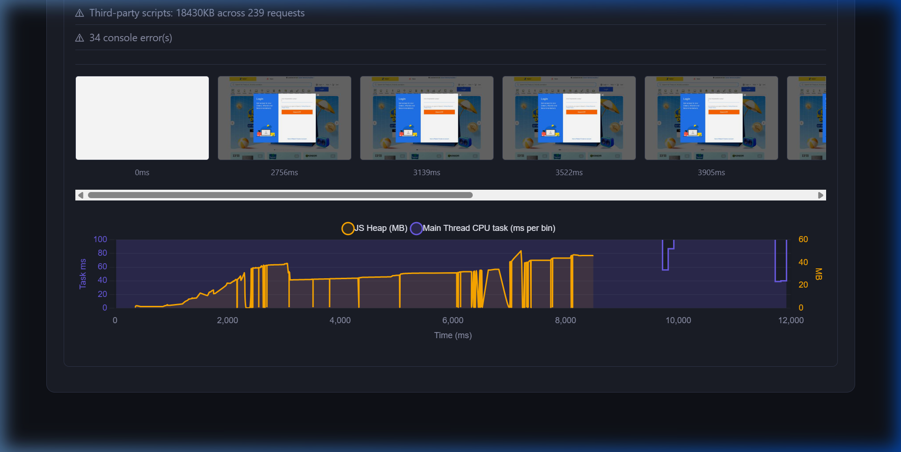

Systems-grade performance telemetry for modern frontend infrastructure. Scale your bottleneck mappings from one to hundreds of routes.
Lighthouse is a snapshot. It tells you a single page is slow.
ChromeLens is an MRI. It tells you exactly which V8 compilation blocked the main thread on 50 different template routes, mapping rendering bottlenecks across your entire fleet.
Crawls and profiles entire site topologies concurrently via Playwright link extraction and sitemap structures. Discards noise and obeys robots.txt.
Captures low-level Chrome metrics directly from the DevTools Protocol—exposing Long Tasks >50ms, GC pauses, Paint counts, and layout thrashing.
Bypass static loads. Programmatically script user journeys (clicks, SPA navigations) while continuously streaming hardware CPU and JS Heap utilization.
ChromeLens includes an advanced mode to emulate full user journeys (like filling carts or searching complex SPAs) to visualize exactly when and why your Main Thread locks up.

ChromeLens is engineered across 4 distinct processing subsystems, piping Playwright Chromium data natively into JSON artifact reports and interactive dashboards:
Tracing.dataCollected multi-megabyte streams.